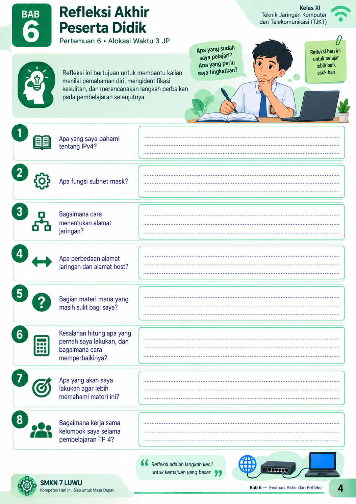

REFLEKSI AKHIR PESERTA DIDIK
Tujuan Pembelajaran 4
Kelas XI TJKT · Pertemuan 6 · Alokasi Waktu 3 JP

Petunjuk: Tuliskan jawaban refleksi dengan jujur sesuai pengalaman belajar kalian selama Tujuan Pembelajaran 4.
Kelas XI TJKT · Pertemuan 6 · Alokasi Waktu 3 JP
